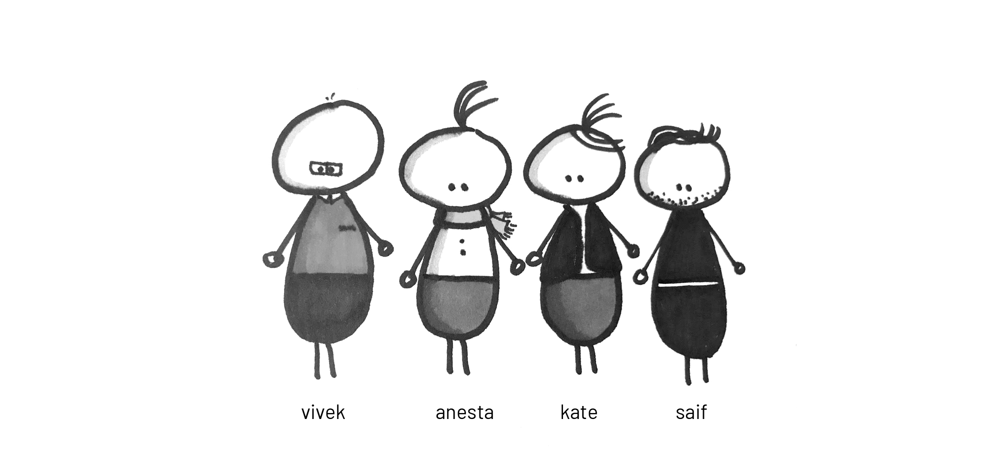

Meet the Team

We believe in simplifying the healthcare system for better health outcomes.
Vivek HV, Bachelor of Technology, Aerospace Engineering
As a senior engineer at Honeywell, Vivek worked on rapid prototyping and development of products for business jet cabin systems. As co-founder of CurExplore, he worked on awareness about and access to medical trials. Across this and other professional work, he believes in influence through design, engineering, and innovation, especially related to issues he has witnessed surrounding rapid urbanization—transportation, healthcare, food, and water. Beyond this, Vivek enjoys creating through fabrication, art, and programming, and loves trekking.
Anesta Iwan, Bachelor of Architecture
As an architectural designer, she's worked on strategy-based, conceptual, and built projects in both academic and professional settings. She's led and participated in a number of prototyping/exhibition projects throughout the Bay Area. She is curious about the science behind data, buildings, and everyday products, where design and engineering merge and have a larger and more global impact, especially around the topic of health and wellness. She constantly looks for challenges through multiple design competitions during her evenings and she spends her weekends on the ice, where she coaches figure skating to students of all ages.
Kathrine Spies, Bachelor of Science, Chemical Engineering
Following undergraduate studies, Katherine’s training focused on leadership and flying acumen as an officer in the United
States Marine Corps. Upon selection to the United States Naval Test Pilot School, her focus shifted to the integration of
aeronautical engineering, flight test and evaluation, and project management. As a developmental test pilot, she flew new
or modified aircraft to evaluate the design, bridging the gap from conception to employment, and now aims to work on the
material science behind human-computer interactions in order to cultivate a brighter tomorrow.
Saif Haobsh, Bachelor of Architecture
Saif’s professional experience has been in the NY Metro Area and the Middle East, most recently at AECOM-Abu Dhabi as an architect specializing in computational design and algorithmic modeling, with additional exposure to project management. At AECOM, his work spanned high-rise towers, healthcare, hospitality, transportation, and masterplan developments. He is dedicated to addressing problems at the interface between human behavior and the built environment, with a focus in crisis mitigation, urban displacement, and resiliency. He enjoys music and film production, and has created music videos.